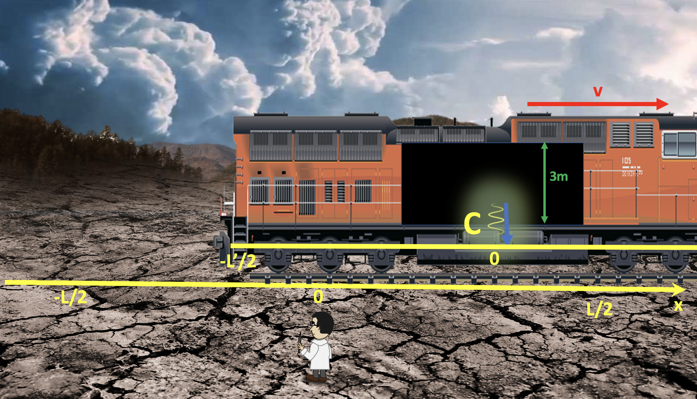

Forrige side🙂 🙁Eksempel 1PADLET

Event C er at lysstrålen kommer tilbake til gulvet i toget (i origo på x’-aksen i togsystemet). Da har toget flyttet seg enda lenger bortover langs x-aksen i labsystemet. Du får nå oppgitt at midtpunktet (origo på x’-aksen) har flyttet seg 8 meter langs x-aksen i labsystemet siden event A skjedde..